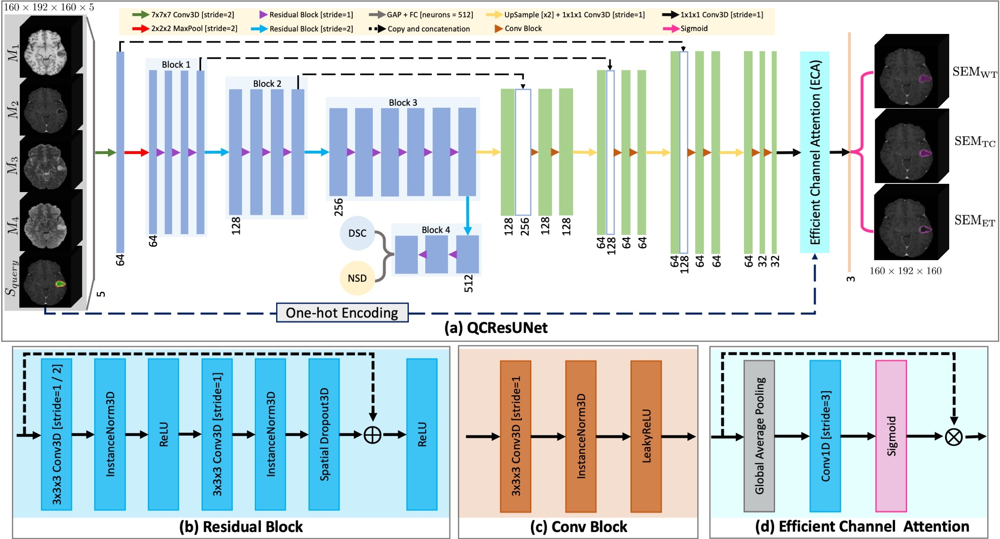
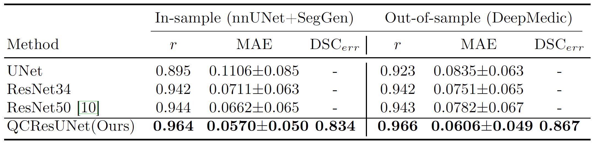

1Mallinckrodt Institute of Radiology, Washington University School of Medicine, St. Louis, MO, USA 2Department of Electrical and Systems Engineering, Washington University in St. Louis, St. Louis, MO, USA 3Department of Biomedical Engineering, University of Cincinnati, Cincinnati, OH, USA 4Institute for Informatics, Data Science & Biostatistics, Washington University School of Medicine, St. Louis, MO, USA
Deep learning has achieved state-of-the-art performance in automated brain tumor segmentation from magnetic resonance imaging (MRI) scans. However, the unexpected occurrence of poor-quality outliers, especially in out-of-distribution samples, hinders their translation into patient-centered clinical practice. Therefore, it is important to develop automated tools for large-scale segmentation quality control (QC). However, most existing QC methods targeted cardiac MRI segmentation which involves a single modality and a single tissue type. Importantly, these methods only provide a subject-level segmentation-quality prediction, which cannot inform clinicians where the segmentation needs to be refined. To address this gap, we proposed a novel network architecture called QCResUNet that simultaneously produces segmentation-quality measures as well as voxel-level segmentation error maps for brain tumor segmentation QC. To train the proposed model, we created a wide variety of segmentation-quality results by using i) models that have been trained for a varying number of epochs with different modalities; and ii) a newly devised segmentation-generation method called SegGen. The proposed method was validated on a large public brain tumor dataset with segmentations generated by different methods, achieving high performance on the prediction of segmentation-quality metric as well as voxel-wise localization of segmentation errors.
Figure 1: Examples showcasing the performance of the proposed methods. The last column denotes the QC performance of different methods. The penultimate column denotes the predicted segmentation error.
Given four imaging modalities denoted as $[X_1, X_2, X_3, X_4]$ and a predicted multi-class brain tumor segmentation mask ($S_{pred}$), the goal of our approach is to automatically assess the tumor segmentation quality by simultaneously predicting DSC and identifying segmentation errors as a binary mask ($S_{err}$). Toward this end, we proposed a 3D encoder-decoder architecture termed QCResUNet (see Figure 1.(a)) for simultaneously predicting DSC and localizing segmentation errors. QCResUNet has two parts trained in an end-to-end fashion: i) a ResNet-34 encoder for DSC prediction; and ii) a decoder architecture for segmentation error map prediction (i.e., the difference between predicted segmentation and ground-truth segmentation).
Figure 1: (a) The proposed QCResUNet model adopts an encoder-decoder neural network architecture that takes four modalities and the segmentation to be evaluated. Given this input, QCResUNet predicts the DSC and segmentation error map. (b) The residual block in the encoder. (c) The convolutional block in the decoder.
The training QCResUNet is under the multi-task learning framework, whose objective function consists of two parts. The first part corresponds to the DSC regression task. It consists of a mean absolute error (MAE) loss ($\mathcal{L}_{MAE}$) term that penalizes differences between ground truth ($DSC_{gt}$) and predicted DSC ($DSC_{pred}$):
where $N$ denotes the number of samples in a batch. The second part of the objective function corresponds to the segmentation error prediction. It consists of a dice loss~\cite{drozdzal2016importance} and a binary cross-entropy loss, given by:$\begin{eqnarray} \mathcal{L}_{MAE} = \frac{1}{N} \sum_{n=1}^{N} |DSC_{gt}^{(n)} - DSC_{pred}^{(n)}|_1, \end{eqnarray}$
$\begin{eqnarray} \mathcal{L}_{dice} = - \frac{2 \cdot \sum_{i=1}^{I} S_{err_{gt}}^{(i)} \cdot S_{err_{pred}}^{(i)} }{\sum_{i=1}^{I}S_{err_{gt}}^{(i)} + \sum_{i=1}^{I}S_{err_{pred}}^{(i)}}
where $S_{err_{gt}}$, $S_{err_{pred}}$ denote the binary ground-truth segmentation error map and the predicted error segmentation map from the sigmoid output of the decoder, respectively. The dice loss and cross-entropy loss were averaged across the number of pixels $I$ in a batch. The two parts are combined using a weight parameter $\lambda$ to balance the different loss components:$\begin{eqnarray} \mathcal{L}_{BCE} = -\frac{1}{I} \sum_{i=1}^{I} S_{err_{gt}}^{(i)} \log S_{err_{pred}}^{(i)} + (1- S_{err_{gt}}^{(i)}) \log \left( 1-S_{err_{pred}}^{(i)} \right)
$\begin{eqnarray} \mathcal{L}_{total} = \mathcal{L}_{MAE} + \lambda (\mathcal{L}_{dice} + \mathcal{L}_{BCE}).
Table 1: The QC performance of three baseline methods and the proposed method was evaluated on in-sample (nnUNet and SegGen) and out-of-sample (DeepMedic) segmentations. The best metrics in each column are highlighted in bold.
Figure 2: Comparison of QC performance between three baseline methods (UNet, ResNet-34, ResNet-50) and the proposed method (QCResUNet) for segmentations generated using nnUNet and SegGen (top row) as well as DeepMedic (bottom row).